| Variable.Name | Scoring..Points. | Scoring..Points..1 |
|---|---|---|
| Completions | Typically not scored (0 points) | 0.00 |
| Attempts | Typically not scored (0 points) | 0.00 |
| PassingYards | 1 point per 25 passing yards | 0.04 |
| PassingTDs | 4 points per passing touchdown | 4.00 |
| Interceptions | -2 points per interception | -2.00 |
| RushingAttempts | Typically not scored (0 points) | 0.00 |
| RushingYards | 1 point per 10 rushing yards | 0.10 |
| RushingTDs | 6 points per rushing touchdown | 6.00 |
| Targets | Typically not scored (0 points) | 0.00 |
| Receptions | 1 point per reception (PPR format) | 1.00 |
| ReceivingYards | 1 point per 10 receiving yards | 0.10 |
| ReceivingTDs | 6 points per receiving touchdown | 6.00 |
| Fumbles | -2 points per fumble (if lost) | -2.00 |
| FumblesLost | -2 points per fumble lost | -2.00 |
| CompletionsPerAttempt | Typically not scored (0 points) | 0.00 |
| TDsPerAttempt | Typically not scored (0 points) | 0.00 |
| InterceptionsPerAttempt | Typically not scored (0 points) | 0.00 |
| TDsPerReception | Typically not scored (0 points) | 0.00 |
| FumblesLostPerFumble | Typically not scored (0 points) | 0.00 |
| FantasyPointsPPR | NA | NA |
Principal Component Analysis to Inform Draft Selection for Fantasy Football Teams
Around this time every year, if you’re like me, you’ve already started to mentally prepare for 80% of your conversations to be on the topic of football. For those individuals that would not classify themselves as ffanatics, it’s probably annoying - it’s annoying for all of us. Pretty consistently there will behavior from fans that range from DMs to athletes, verbal assaults to close friends, damaged property, and public humiliation. Who realistically has the mental endurance to only discuss a single topic over an extended period of time for something they’re not physically involved in? It’s those with passion, and although I am not passionate about football (nor justify the aforementioned behavior), it will be my first of hopefully many Fantasy Football leagues. If there’s one thing I am passionate about, it’s tilting the odds in my favor. Usually that’s in the form of taking a creative line on the felt on a 2/5 reg by extracting max value with 67s on a low connected board in a 4! pot as the preflop aggressor. Balance and discipline is the name of the game though, and who are we if we don’t apply the same approach to all areas in life…
Data Sets
The data contains in-game and Fantasy Football Points per Reception stats by NFL player from 2017 - 2023 for all 17 games of the regular season. Most leagues use a points per reception based metric to calculate fantasy points, or FantasyPointsPPR. Before converting to fantasy points, in-game stats may be weighted or counted differently. My league adopted the following criterion:
Two different data sets are used, with a focus on three distinct NFL regular seasons - 2022, 2023, and 2024. Both data sets have been scraped but differ in source, purpose, and underlying information present:
Data Set 1 - Historical - 2022 & 2023: This data set contains historical data from 2017-2023 for both relevant in-game statistics and fantasy scoring for regular NFL season. This project primarily focuses on 2022 and 2023. Each observation or row in the data set is a NFL athlete’s relevant in-game statistics, such as position, team, completion, attempts, interceptions per attempt, etc. Since most leagues exclude defensive players from their fantasy team, those have been implicitly removed from the data set. The key feature of this data set are the retroactive fantasy rankings/scoring. The total fantasy points, overall rank, and rank by position are available for each player. This enables the direct comparison of calculated rankings from models to their actual rank.
Players that were on two or more teams in a given season are not assigned a team - but are instead given a makeshift name to highlight this. For example, you may see Baker Mayfield’s registered team as 2TM. One notable variable contained in the data set is ADP, or average draft position, representing the number of times the player was drafted across all recorded leagues before the start of the respective season. Additional in-game stats were calculated afterwards. These were YardsPerRushAttempt,CompletionsPerAttempt, TDsPerAttempt, InterceptionsPerAttempt, TDsPerReception, and FumblesLostPerFumble. My fantasy league’s scoring methodologies were also factored into a set of new variables. These variables have the schoring_ schema.
Years 2017-2022 and 2023 are taken from the same source but were scraped separately. Player IDs assigned
Data Set 2 - Projected - 2024: This data set contains all player match ups for the upcoming regular 2024 NFL season. The in-game statistics recorded for each player are projections based on those teams and match ups. One benefit of this data set is being able to use these projections as inputs of our model to determine which players obtain the most fantasy points, rank them in ascending order, and draft them accordingly. The drawback is that no additional information on how these projections were calculated are known so the accuracy of these projections cannot be confirmed.
Methods
The current methodology is to use singular value decomposition of eigenvalues to create scores of new variables that can be attributed to their overall performance. Their projected overall performance would be used to rank each player in ascending order (potentially by position) to inform our draft decision. Starting with the 2022 season, the overall rank for each player is calculated and then compared to the actual ranks of that same year. Precision will be measured in three ways:
- Difference in overall rank
- Difference in position rank
- Difference in fantasy points, obtained by taking the difference of fantasy points using our model’s draft order with the fantasy points using the ideal draft order.
If the model is precise, the same 2022 projections will then be tested on 2023. This method is not full-proof obviously. Many things change between off seasons of professional sports, but the objective is to quantify the model’s ability to generalize onto future seasons. If it can, the same process will be done starting with the 2023 data set, testing it against itself, then using those scores for 2024. If it does not, principal component scores will be calculated using the 2024 data set only, and only those will inform our draft order. This is not the ideal scenario, since it inherently trusts the projected data.
Processing
Missing values in completions per attempt, tds per attempt, interceptions per attempt, tds per reception, and fumbles lost per fumble were a result of undefined values in the denominator. Observations of this missing values are directly related to the player and position. For example, QBs will rarely record touchdowns per reception and will therefore have undefined values for those statistics since they are more equipped to measure performance of wide receivers. All missing values in these cases were replaced with zero. The same approach was applied to yards per attempt and yards per reception with two notable exceptions. Foster Moreau had zero rushing attempts but two rushing yards during the 2022 NFL season which is difficult to interpret considering rushing attempts are a function of rushing yards. In the same vein, Joe Flacco had -3 receiving yards but zero receptions. Both of these players were removed from the data set.
[1] 1367YoY PPR Trend for Top NFL Teams
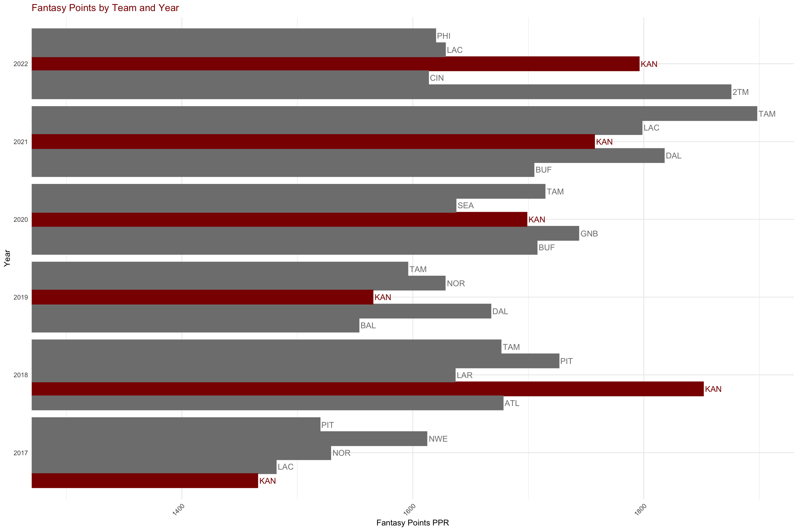
2022 NFL season
Data Exploration
The data was sub set for the 2022 season and then skimmed for to review distributions, counts, and other elements within the data set.
| Name | fantasy |
| Number of rows | 575 |
| Number of columns | 43 |
| _______________________ | |
| Column type frequency: | |
| character | 2 |
| factor | 2 |
| numeric | 39 |
| ________________________ | |
| Group variables | None |
Variable type: character
| skim_variable | n_missing | complete_rate | min | max | empty | n_unique | whitespace |
|---|---|---|---|---|---|---|---|
| Player | 0 | 1 | 8 | 24 | 0 | 575 | 0 |
| PlayerID | 0 | 1 | 8 | 8 | 0 | 575 | 0 |
Variable type: factor
| skim_variable | n_missing | complete_rate | ordered | n_unique | top_counts |
|---|---|---|---|---|---|
| Team | 0 | 1 | FALSE | 34 | 2TM: 28, ARI: 20, DEN: 20, LAC: 20 |
| FantasyPosition | 0 | 1 | FALSE | 4 | WR: 218, RB: 162, TE: 113, QB: 82 |
Variable type: numeric
| skim_variable | n_missing | complete_rate | mean | sd | p0 | p25 | p50 | p75 | p100 | hist |
|---|---|---|---|---|---|---|---|---|---|---|
| Rank | 0 | 1.00 | 289.17 | 166.96 | 1.00 | 144.50 | 290.00 | 433.50 | 577.00 | ▇▇▇▇▇ |
| Age | 0 | 1.00 | 26.19 | 3.23 | 21.00 | 24.00 | 26.00 | 28.00 | 45.00 | ▇▇▁▁▁ |
| Games | 0 | 1.00 | 11.60 | 5.16 | 1.00 | 8.00 | 13.00 | 16.00 | 17.00 | ▂▂▂▂▇ |
| GamesStarted | 0 | 1.00 | 5.56 | 5.81 | 0.00 | 0.00 | 3.00 | 11.00 | 17.00 | ▇▂▂▂▂ |
| Completions | 0 | 1.00 | 19.98 | 72.11 | 0.00 | 0.00 | 0.00 | 0.00 | 490.00 | ▇▁▁▁▁ |
| Attempts | 0 | 1.00 | 31.08 | 110.35 | 0.00 | 0.00 | 0.00 | 0.00 | 733.00 | ▇▁▁▁▁ |
| PassingYards | 0 | 1.00 | 219.00 | 789.12 | 0.00 | 0.00 | 0.00 | 0.00 | 5250.00 | ▇▁▁▁▁ |
| PassingTDs | 0 | 1.00 | 1.30 | 5.04 | 0.00 | 0.00 | 0.00 | 0.00 | 41.00 | ▇▁▁▁▁ |
| Interceptions | 0 | 1.00 | 0.72 | 2.40 | 0.00 | 0.00 | 0.00 | 0.00 | 15.00 | ▇▁▁▁▁ |
| RushingAttempts | 0 | 1.00 | 25.65 | 56.65 | 0.00 | 0.00 | 2.00 | 17.00 | 349.00 | ▇▁▁▁▁ |
| RushingYards | 0 | 1.00 | 114.51 | 261.73 | -15.00 | 0.00 | 5.00 | 73.50 | 1653.00 | ▇▁▁▁▁ |
| YardsPerAttempt | 0 | 1.00 | 2.62 | 3.69 | -7.50 | 0.00 | 1.75 | 4.46 | 40.00 | ▇▇▁▁▁ |
| RushingTDs | 0 | 1.00 | 0.85 | 2.14 | 0.00 | 0.00 | 0.00 | 1.00 | 17.00 | ▇▁▁▁▁ |
| Targets | 0 | 1.00 | 29.95 | 37.05 | 0.00 | 3.00 | 14.00 | 44.00 | 184.00 | ▇▂▁▁▁ |
| Receptions | 0 | 1.00 | 20.11 | 24.93 | 0.00 | 2.00 | 9.00 | 30.00 | 128.00 | ▇▂▁▁▁ |
| ReceivingYards | 0 | 1.00 | 220.03 | 304.02 | -10.00 | 11.00 | 96.00 | 313.50 | 1809.00 | ▇▂▁▁▁ |
| YardsPerReception | 0 | 1.00 | 8.67 | 6.23 | -6.00 | 5.00 | 8.90 | 12.11 | 42.00 | ▃▇▂▁▁ |
| ReceivingTDs | 0 | 1.00 | 1.30 | 2.12 | 0.00 | 0.00 | 0.00 | 2.00 | 14.00 | ▇▁▁▁▁ |
| Fumbles | 0 | 1.00 | 1.04 | 1.98 | 0.00 | 0.00 | 0.00 | 1.00 | 16.00 | ▇▁▁▁▁ |
| FumblesLost | 0 | 1.00 | 0.48 | 0.98 | 0.00 | 0.00 | 0.00 | 1.00 | 9.00 | ▇▁▁▁▁ |
| FantasyPointsPPR | 0 | 1.00 | 78.41 | 85.43 | -2.90 | 11.50 | 43.40 | 116.35 | 417.40 | ▇▂▂▁▁ |
| PositionRank | 0 | 1.00 | 81.82 | 55.22 | 1.00 | 37.00 | 73.00 | 118.50 | 218.00 | ▇▇▅▃▂ |
| Year | 0 | 1.00 | 2022.00 | 0.00 | 2022.00 | 2022.00 | 2022.00 | 2022.00 | 2022.00 | ▁▁▇▁▁ |
| ADP | 429 | 0.25 | 71.90 | 42.07 | 1.30 | 36.42 | 70.65 | 107.15 | 153.80 | ▇▇▇▇▅ |
| CompletionsPerAttempt | 0 | 1.00 | 0.10 | 0.24 | 0.00 | 0.00 | 0.00 | 0.00 | 1.00 | ▇▁▁▁▁ |
| TDsPerAttempt | 0 | 1.00 | 0.01 | 0.08 | 0.00 | 0.00 | 0.00 | 0.00 | 1.00 | ▇▁▁▁▁ |
| InterceptionsPerAttempt | 0 | 1.00 | 0.01 | 0.08 | 0.00 | 0.00 | 0.00 | 0.00 | 1.00 | ▇▁▁▁▁ |
| TDsPerReception | 0 | 1.00 | 0.05 | 0.11 | 0.00 | 0.00 | 0.00 | 0.07 | 1.00 | ▇▁▁▁▁ |
| FumblesLostPerFumble | 0 | 1.00 | 0.20 | 0.36 | 0.00 | 0.00 | 0.00 | 0.25 | 1.00 | ▇▁▁▁▂ |
| scoring_PassingYards | 0 | 1.00 | 8.76 | 31.56 | 0.00 | 0.00 | 0.00 | 0.00 | 210.00 | ▇▁▁▁▁ |
| scoring_PassingTDs | 0 | 1.00 | 5.18 | 20.16 | 0.00 | 0.00 | 0.00 | 0.00 | 164.00 | ▇▁▁▁▁ |
| scoring_Interceptions | 0 | 1.00 | -1.44 | 4.80 | -30.00 | 0.00 | 0.00 | 0.00 | 0.00 | ▁▁▁▁▇ |
| scoring_RushingYards | 0 | 1.00 | 1.15 | 2.62 | -0.15 | 0.00 | 0.05 | 0.74 | 16.53 | ▇▁▁▁▁ |
| scoring_RushingTDs | 0 | 1.00 | 5.08 | 12.82 | 0.00 | 0.00 | 0.00 | 6.00 | 102.00 | ▇▁▁▁▁ |
| scoring_Receptions | 0 | 1.00 | 20.11 | 24.93 | 0.00 | 2.00 | 9.00 | 30.00 | 128.00 | ▇▂▁▁▁ |
| scoring_ReceivingYards | 0 | 1.00 | 22.00 | 30.40 | -1.00 | 1.10 | 9.60 | 31.35 | 180.90 | ▇▂▁▁▁ |
| scoring_ReceivingTDs | 0 | 1.00 | 7.79 | 12.72 | 0.00 | 0.00 | 0.00 | 12.00 | 84.00 | ▇▁▁▁▁ |
| scoring_Fumbles | 0 | 1.00 | -2.09 | 3.96 | -32.00 | -2.00 | 0.00 | 0.00 | 0.00 | ▁▁▁▁▇ |
| scoring_FumblesLost | 0 | 1.00 | -0.96 | 1.96 | -18.00 | -2.00 | 0.00 | 0.00 | 0.00 | ▁▁▁▁▇ |
Important categorical variables to note outside of the Team and Player is the Fantasy Position. These are QBs, WRs, TEs, and RBs. All defensive positions are not scoped and have been explicitly removed from the data set. The objective of this project is to create a fantasy team that has the highest likelihood of obtaining the most Fantasy Points (PPR) for the upcoming season based on prior seasons. The next logical question becomes, does this likelihood vary by team? By position? Intuitively, the likelihood will vary simply based on how many of these positions are in game at a given time. A table of each position shows the distribution of each position in a given NFL season.
FantasyPosition n percent
WR 218 0.3791304
RB 162 0.2817391
TE 113 0.1965217
QB 82 0.1426087A majority of NFL players in 2022 for fantasy purposes were wide receivers (38%) while the least common position were quarterbacks (14%). For the continuous variables, the important things to note are the means, standard deviations, their counts and distribution via the histograms, and any missing values. In-game stats such as Yards Per Attmept, Yards per Reception, and additional variables (below ADP) are missing for a lot of players as expected. The missing values are likely due to a number of factors such as the position of the player and the number of games each played. The range of games played by each player vary from none to 17, representative of 17 total games in the regular season. The descriptive summary for Fantasy Points (PPR) is:
vars n mean sd median trimmed mad min max range skew kurtosis
X1 1 575 78.41 85.43 43.4 64 57.08 -2.9 417.4 420.3 1.38 1.4
se
X1 3.56With mean = 78.4 (sd = 85.29), it is obvious that there is high variability. The histogram of PPR shows where how this variability is distributed.
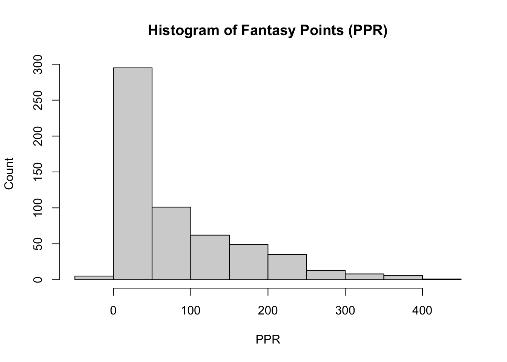
Depending on the fantasy league, PPR scoring will be different in the sense that there is typically a PPR threshold per game for a player in order for their PPR to be recorded for that given week. If the player is below the baseline, the PPR may be zero. Interestingly enough, the distribution of PPR in 2022 is a log-normal right skew distribution. The observed PPR for most players were approximately zero. This is logical, granted the extreme difficulty of being a top NFL performer. Most players are benched, aren’t playing games, nor are starters. Evidently, most of the continuous variables will follow the same trend with observed frequencies ~0 and relatively a fewer number of players scoring the most for each variable. There are three notable exceptions:
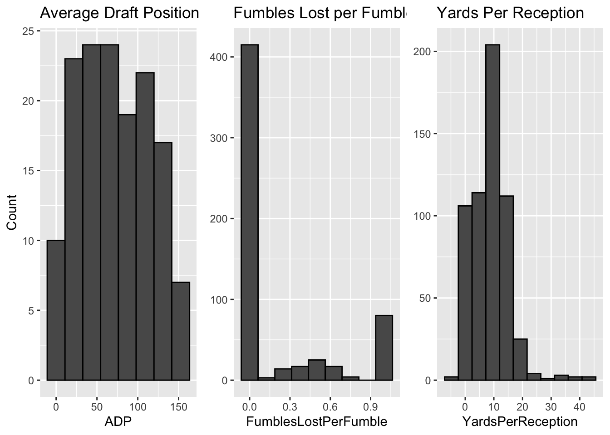
Average Draft Position - Uniform Distribution: For players that have this data available, ADP is uniformly distributed across most players. This implies that the parent population drafts players evenly across the board and there isn’t a strong concentration of players being picked predominantly. To reiterate, this is specifically for players that have ADP data available, which may be a combination of the most popular or the best players.
Fumbles Lost per Fumble - Bimodal distribution: Frequency of Fumbles Lost per Fumble have peaks at both zero and one, revealing that most players either fumble and lose possession of the ball, resulting in a turnover, or don’t fumble at all.
Yards Per Reception - Normal distribution: Players average 10 Yards Per Reception with a majority of players within the range of two standard deviations from the mean. Although there is a slight right skew, this is one of the few variables that follows a Gaussian distribution.
The first thing we want to understand is what position, if any, we should be more inclined to draft first, and their likelihood of obtaining the most fantasy points. I started by seeing what the public likes to draft first. In 2022, the public drafted quarterbacks around 86 times on average, the highest of the four positions, with tight ends at a close second of 84 times on average. Running backs and wide receivers then followed. Acknowledging that ADP data is not available for all positions, I wanted to better understand if quarterbacks are the biggest factor in regards to PPR. A comparison of ADP and PPR by position begins to paint the picture. On average, quarterbacks had 105 fantasy points in 22, followed by wide receivers, running backs, then tight ends.
# A tibble: 4 × 3
FantasyPosition AverageDraftPosition AveragePPR
<fct> <dbl> <dbl>
1 QB 85.8 105.
2 WR 73.5 81.6
3 RB 61.5 75.7
4 TE 83.9 56.5This seems to be consistent at a higher level when the top three teams for the 2022 regular season are compared.
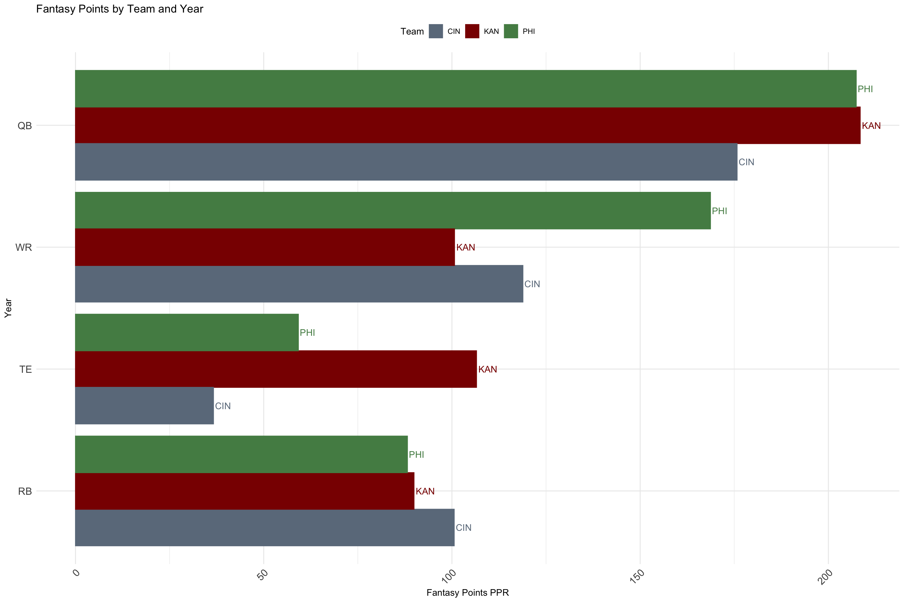
However, properly accounting for total number of games played by player, yields different results. Evidently, quarterbacks are disproportionately the most efficient in regard to fantasy points on a per game basis at .164 per game. Running backs, tight ends, and receivers consecutively follow but are significantly behind. However, fantasy points between those three positions vary by less than 5%. The logical question becomes what are the underlying causes of this variation? One possibility is that there are typically more wide receivers on an offensive play than any other position. Another possibility can be due to the extreme routes and distances wide receivers run, making them injury prone and therefore less efficient.
# A tibble: 4 × 2
FantasyPosition PPRperGame
<fct> <dbl>
1 QB 0.164
2 RB 0.0393
3 TE 0.0372
4 WR 0.0316Analysis SVD PCA
Eigenvalue decomposition is an unsupervised machine learning method typically used for dimensionality reduction on mostly unlabeled data. The same approach is used here, with the intent to reduce the data to components that measure performance in some aspect. The best way to think about this is in the form of a recipe. A cookbook’s recipe for chicken cordon bleu will have elaborate concoctions and mixes of different food. When applied in this context, it would reduce the recipe to its core components, 3/4 chicken, 1/8 cheese, 1/8 ham let’s say. It then becomes much easier to make chicken cordon bleu while keeping most of the taste. While an oversimplification, the approach is essentially the same, with the goal of maximizing the amount of underlying variation using linear combinations of variables. At its core, there is some latent underlying variable(s) that combinations of these variables measure. What those underlying variables measure and its relevancy is on us to define. These are the principal components. The principal components are made up of the original variables, and how much that variable contributes to the underlying variable (ie principal component) are the eigen vectors or loadings. Loadings can be positive (greatly contributes) or negative (adversely contributes). How well the variables load help define what that new underlying variable is. To define the inclusion criteria, any variable that loads +/- .7 will be considered as loading well and those variables alone will be what is used to define the underlying variable/component. This empirical threshold is a very conservative approach.
Eigen vectors describe a mathematical phenomena such that
\[ A * v = λ * v \]
where A is a square matrix, v is an eigen vector, and λ is a scalar (numerical value) and the associated eigen value of vector v. In this application, matrix A is correlation matrix of the original data. This mechanism works because linear transformations are applied to the data meaning the data does not inherently change. The proportions of all variables and the direction in which they move remain the same. The data gets centered at the origin after scaling, and a best fitting line is calculated that goes through the origin and maximizes the variance in the data. The algorithm does this by fitting a random line through the data, projecting the points onto the line, and calculating the largest sum of squared difference. The yielded line of best fit is the eigen vector for the principal component and the slope is the eigen value.
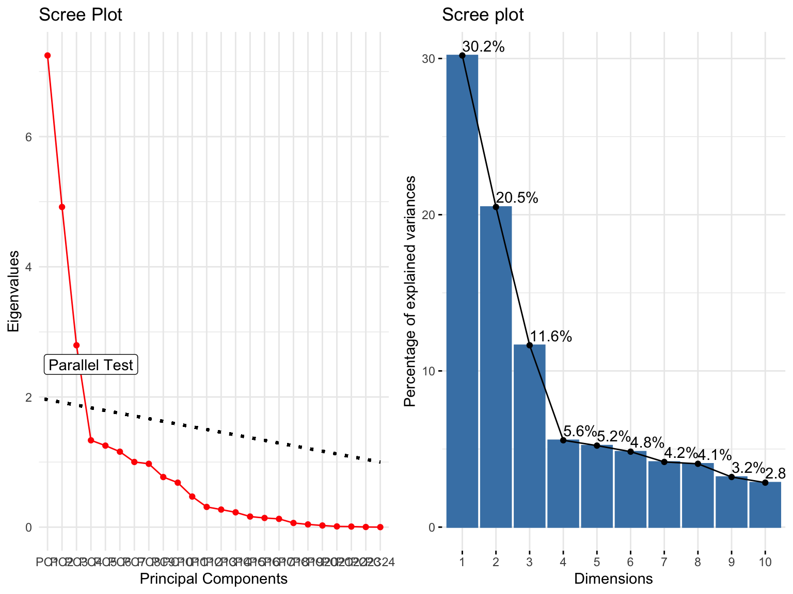
A parallel test was used to measure the number of components to obtain. The test performs the same decomposition on simulated data of the same size and graphs the results. Where the simulated and actual data intersect is the cutoff for the number of components to obtain. The results of the test suggest three components. The y-axis plots the eigenvalues which is the total variation explained by each component. In a simpler sense, it can be thought of as the number of original variables accounted for in that component (hence the horizontal line separating values less than one). Three principal components were obtained, acknowledging that principal component one (PC1) should account for approximately six variables, PC2 around 5, and PC3 around 3. The other scree plot better highlights the components as a percentage of total variability explained. Keep in mind that PC1 only accounts for 30% of the total variability and the first three components cumulatively account for 52% of total variability. It’s likely that the post-hoc tests described in the methods section will not be sufficient for our goal since there is still half of the total variation not accounted for in these components.
Scores are calculated for each individual player. Depending on how the components are defined, players can be ranked in ascending order.
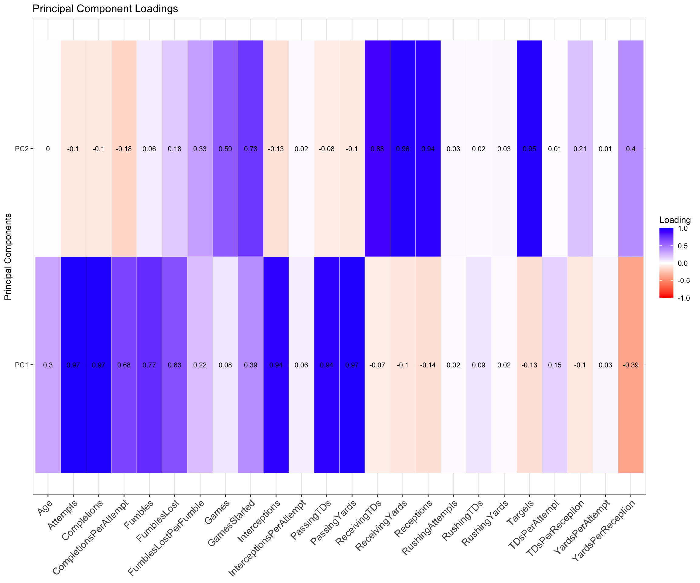
Principal Components - In-Game Stats
rotation: maximum variance
PC1 Definition: High-Volume Performing QBs
Attributes: Completions, Attempts, Passing Yards, Passing TDs, Interceptions, Fumbles
- PC1 would be attributed to high-volume QBs as they load extremely well for the above categories. The first inclination was to attribute PC1 to high performing quarter backs, however, that statement alone would be unjustifiable considering that interceptions and fumbles load extremely well to this component. High-volume quarter backs would be a more fitting description. These quarter backs are performing extremely well in some regard since it loads high for completions, passing yards, and passing touch downs. We can reason that these quarter backs are also able to consistently get the ball off of their hands. High-volume quarter backs will also load high to interceptions and fumbles. The more throws and attempts made, the more likely that fumbles and interceptions will occur.
PC2 Definition: Offensive Long Range Efficiency
Attributes: Games Started, Targets, Receptions, Receiving Yards, Receiving TDs
- PC2 can be attributed to total overall offensive efficiency given that we load extremely high for targets, receptions, receiving yards, and receiving touchdowns. Players typically defined for this category would be wide receivers, and pc2 is measuring yardage efficiency. Efficiency is important in this context given that we also load high to targets, and even though it is not an inclusion criteria in fantasy scoring, it speaks to the aggressiveness on the offensive side. The key distinction to make here is that this describes the overall long range efficiency only, since rushing yards and touch downs are not accounted for in this component. Additionally, overall long range efficiency is justified since this must be a combination of quarter backs and the offensive line. Wide receivers, running backs, and tight ends will generally only score more touch downs and have more yards with a good quarter back.
PC3 Definition: Offensive Driving Efficiency
Attributes: Rushing Attempts, Rushing Yards, Rushing TDs
- PC3 would be attributed to mainly RBs and TEs that are elite drivers since they load high for rushing stats.
Ideally, we’d want to load players that load high for all three categories. Considering the nature of football, depending on player’s primary position, they will naturally perform better in certain stats or categories over others. In this case, there are multiple approaches to account for this. Actually, along every step I find there are ways that our paths diverge, but more on that later. One approach is to use only principal component one and players/scores that load high for that component to pick our quarter back. Principal components two and three would then be used for all other positions. I started with that approach but here comes the other divergence - how I choose the calculate the scores. There are two options under consideration.
- Include all variables in the principal component computation, with the benefit of providing a more comprehensive score but the drawback of added complexity.
- Include only variables in the principal component computations that load high as the score, with the benefit of exclusively calculating how good they are at being good but the drawback of missing nuanced information capture in less significant variables.
I tested the model starting with the second approach. First, I reviewed how the top ten quarter backs performed in 2022 by looking at their overall rank, position rank, the player, and the total fantasy points they had.
# A tibble: 10 × 4
Rank PositionRank Player FantasyPointsPPR
<dbl> <dbl> <chr> <dbl>
1 1 1 Patrick Mahomes 417.
2 2 2 Josh Allen 396.
3 3 3 Jalen Hurts 378
4 7 4 Joe Burrow 351.
5 13 5 Geno Smith 304.
6 17 6 Justin Fields 296
7 18 7 Trevor Lawrence 296.
8 19 8 Kirk Cousins 292.
9 20 9 Daniel Jones 289
10 21 10 Jared Goff 284.Then we use the eigen values to calculate the principal component scores for each player, only including variables that loaded high. The players with the highest scores would be the highest performing QBs predicted for the 2022 season. Two things to note. Firstly, the position and overall rank will be the same here since we’ve define our first principal component as attributes of quarter backs only. Secondly, the model’s fantasy points ppr would not be known. The purpose here is to calculate scores and draft in ascending order. We can, however, calculate the difference in fantasy points had we taken the models’ picks. In the table, the model’s fantasy points are the same as actual fantasy points to make this calculation easier. The results are shown below.
Methods of measuring model performance:
Percentage of total players the model accurately selects. If we were selecting quarter backs, we would use the first principal component scores to obtain the top 10 quarter backs in ascending order. We would then compare the results against the actual top 10 quarter backs for that season. In these results, 70% (7 out of 10 QBs) were accurately selected as being in the top 10 for total fantasy points.
Difference in total fantasy points of the top 20 players. The top 20 players for each position are isolated using their associated principal component scores. The sum of the total fantasy points for the top 20 players are then subtracted from the what the actual total fantasy points for players in the top 20 in each position had to obtain the delta.
Absolute difference in position rank by player. Each player will have the net difference in their position rank between the model and their actual rank for that season. In the above table, for example, the model selects Justin Herbert as #2 QB for fantasy but was actually #11 after the regular season, making the net -11.
Now using the model’s picks for the top ten quarter backs, 70% of those selected in the top 10 were actually in the top ten during the 2022 regular season. The total fantasy points for the quarter backs picked by the model were 3131.2. The total fantasy points the top ten quarter backs actually had was 3302 which means the model was off by 5% in regard to quarter back selection. The difference for rank by position are shown below. Players with a negative delta are those that were ranked higher in the model but came in lower after the season. Using a conservative threshold, MAE > 5, Top10 < 70%, and Fantasy Error > 5% will be used. If results are above or below this threshold, different measures should be taken to improve the model.
| FantasyPosition | MAE | Top10 | FantasyError |
|---|---|---|---|
| QB | 4 | 70% | 5.1% |
Principal Components - Fantasy Weights
While the results are seemingly great, this was when I recalled that these principal components only account for half of the total variation. Considering that the goal of singular value decomposition via principal component is to maximize the total variation in the data, I had to think we can do much better. The first principal component which was attributed to quarter backs load high for interceptions and fumbles. While it is justifiable to reason that high-volume quarter backs will naturally intercept and fumble more often solely as a function of volume, would the best quarter backs really load high for those? To better understand this, the exact same process above was done to calculate new component scores, this time only including variables that are used for fantasy scoring. I first created these additional variables by multiplying them by my league’s point system. For example, rushing touch downs were multiplied by six and became the new variable used for the svd. Those variables were passing yards, passing touchdowns, interceptions, rushing yards, rushing touchdowns, receptions, receiving yards, receiving touch downs, fumbles, and fumbles lost.
Results
The parallel test suggested three components were sufficient to explain the maximum variation in the data.
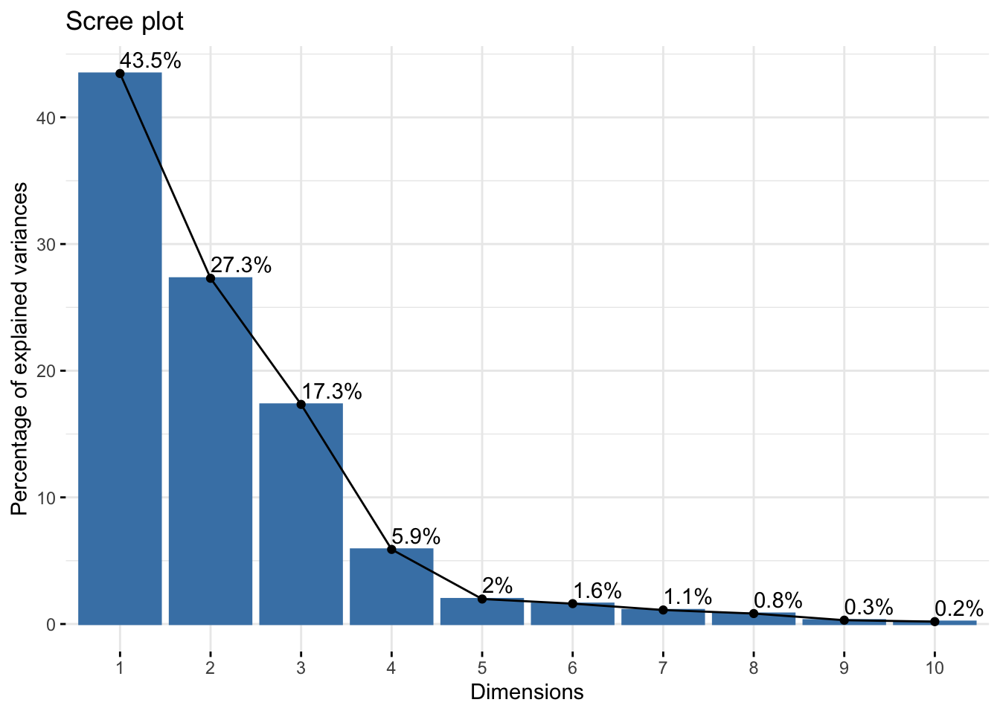
The first three components alone account for 88.1% of the total variation within the data set, much better than the 50% obtained previously. The mean item complexity = 1.1. This means that each individual variable included in the principal components only load significantly on one component. This is the more ideal scenario since it makes defining the components much easier. Previously we had a mean item complexity of 1.5, meaning that half of the variables on average load significantly to two components. The first three components are then defined using a loading threshold of .7.
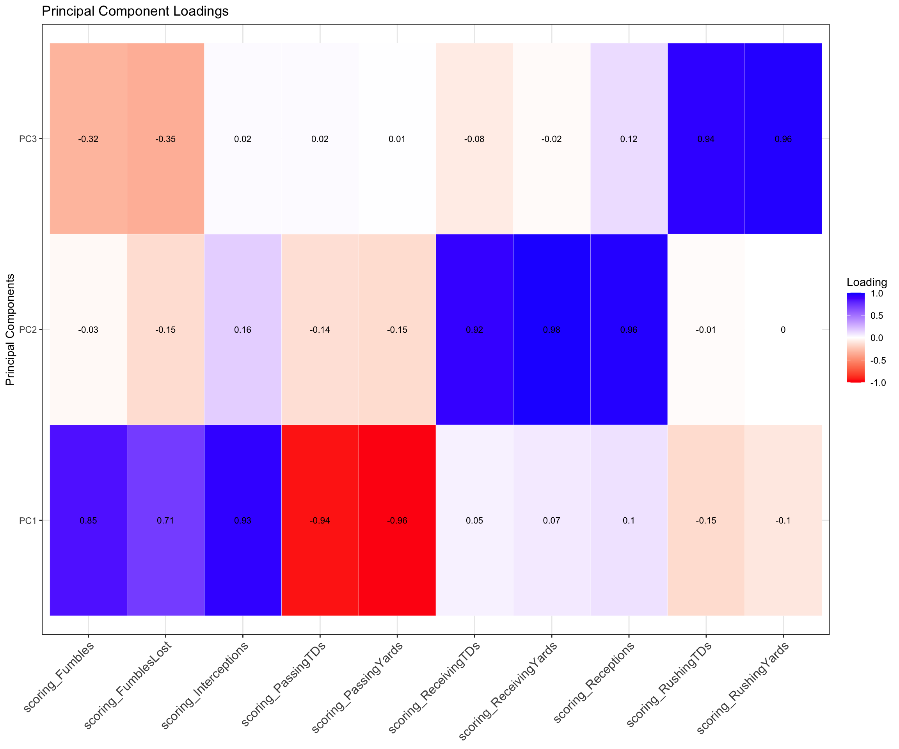
Dimension Definitions
rotation: maximum variance
PC1 Definition: Low Performing QBs
Attributes: (-) Passing Yards, (-) Passing Touchdowns, (+) Fumbles, (+) Interceptions
- PC1 would be attributed to quite literally the least performing quarter backs. The significantly negative loadings for passing yards and touch downs mean that quarter backs that load high to this component are unable to score touch downs. Additionally, they load extremely high for fumbles and interceptions, a confirmation of their under performance in relevant categories. PC1 would only be attributed to quarter backs since these in-game stats are generally relevant to them alone.
PC2 Definition: High-Performing Distance Efficiency
Attributes: + Receiving Touchdowns, + Receiving Yards, + Receptions
- PC2 can be attributed to total overall offensive efficiency given that we load extremely high for receiving touchdowns, receiving yards, and receptions. Players that load high to this category are likely wide receivers since wide receivers are more used for long range plays. The key distinction to make here is that this describes the overall long range efficiency only, since rushing yards and rushing touch downs are not accounted for in this component. Additionally, overall long range efficiency would better describe this component, since this must be a combination of quarter backs and the offensive line. Wide receivers, running backs, and tight ends will generally only score more touch downs and have more yards with a better quarter back.
PC3 Definition: High-Performing Driving Efficiency
Attributes: + Rushing Touchdowns, + Rushing Yards
- PC3 would be attributed to overall driving efficiency in the same fashion. Likewise, this is also a combination of the offense line and the quarterback, considering that high performing drivers will still be unable to score touch downs in some fashion if their quarter back cannot perform. I would expect running backs and tight ends to load high to this category.
The goal is to isolate players in these areas.
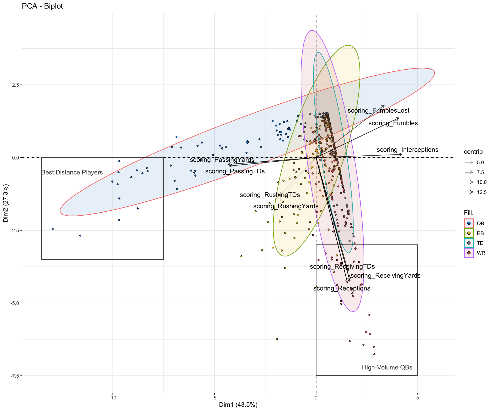
The coordinate plane shows the first component on the x axis and the second on the y axis. The scoring_ and associated arrows are the eigen vectors on this principal component space. An increase on the x axis, or the first principal component, we increase in under performance. We would want to obtain players that negatively contribute to this component ie quadrant three. In the same fashion, an increase on the y axis means an increase in long range efficiency. This can only show the first two components. Based on the above, the we’d use the first component for quarter backs, the second for wide receivers, and the third for tight ends and running backs. However, since WRs, TEs, and RBs are much more similar in position (which the model concurs via the boxed region in quadrant I) than QBs, those three positions were included and ranked for PC2 and PC3. This allows us to more effectively see the primary position and players the model decides to pick for each category. In summary, principal component one was used for quarter backs, principal components two and three were used for all other positions at first. An overall score was then calculated using PC2 and PC3 only. Players with the highest overall scores would load significantly well to PC2 and PC3. These players would be both the best of the best in both long-range and driving efficiency. This allows us to see what positions the model picks for long-range (PC2) and driving (PC3) efficiency. Note that this tells us what position would be the best at both but does not tell us if they are the best at both.
# A tibble: 3 × 2
FantasyPosition n
<fct> <dbl>
1 RB 0.455
2 WR 0.0738
3 TE -0.287 We see that running backs and wide receivers on average have positive scores for both, meaning that they contribute positively to the second and third components (long and driving efficiency). Surprisingly, tight tends on average are negative in both regards. The model rarely selects tight ends across all three of these dimensions. The results from the model show that the best overall QBs via the lowest component scores should be selected for PC1, the best wide receivers for PC2, and the best RBs for PC3. Only a very select few tight ends are chosen for PC2 and PC3. Of the top 30 highest-performing players in long-range efficiency (PC2), 3 of them were tight ends and only 1 of them was in the top 10 - Travis Kelce. Of the top 30 highest-performing players in driving efficiency (PC3), only Taysom Hill (TE), made the cut. Since fantasy league members must select players for every position, the best approach would be to select QBs, WRs, and RBs only for PC1, PC2, and PC3 respectively and then address tight ends afterwards. That same process was followed to compare the model’s picks using against their actuals for 2022. The results for the three positions are shown below.
Model Picks
PC1 - QBs
| Actual_OvrRank | Actual_PositionRank | Player | Actual_FantasyPointsPPR | PositionRank | Model_PositionRank | Model_Player | Model_FantasyPointsPPR | Model_PCscore |
|---|---|---|---|---|---|---|---|---|
| 1 | 1 | Patrick Mahomes | 417.4 | 1 | 1 | Patrick Mahomes | 417.4 | -385.8120 |
| 2 | 2 | Josh Allen | 395.5 | 2 | 2 | Josh Allen | 395.5 | -350.7159 |
| 3 | 3 | Jalen Hurts | 378.0 | 4 | 3 | Joe Burrow | 350.7 | -339.5820 |
| 7 | 4 | Joe Burrow | 350.7 | 8 | 4 | Kirk Cousins | 291.6 | -325.2073 |
| 13 | 5 | Geno Smith | 303.9 | 5 | 5 | Geno Smith | 303.9 | -316.3577 |
| 17 | 6 | Justin Fields | 296.0 | 11 | 6 | Justin Herbert | 281.3 | -311.7454 |
| 18 | 7 | Trevor Lawrence | 295.6 | 10 | 7 | Jared Goff | 284.3 | -309.3991 |
| 19 | 8 | Kirk Cousins | 291.6 | 12 | 8 | Tom Brady | 271.7 | -304.4806 |
| 20 | 9 | Daniel Jones | 289.0 | 7 | 9 | Trevor Lawrence | 295.6 | -299.4071 |
| 21 | 10 | Jared Goff | 284.3 | 13 | 10 | Aaron Rodgers | 239.2 | -280.7368 |
The results are nearly identical to the previous method (on the original variables). Model accurately picks seven of the top ten players.
PC2 - WR
| Actual_OvrRank | Actual_PositionRank | Player | Actual_FantasyPointsPPR | PositionRank | Model_PositionRank | Model_Player | Model_FantasyPointsPPR | Model_PCscore |
|---|---|---|---|---|---|---|---|---|
| 5 | 1 | Justin Jefferson | 368.7 | 1 | 1 | Justin Jefferson | 368.7 | 343.4864 |
| 8 | 2 | Tyreek Hill | 347.2 | 3 | 2 | Davante Adams | 335.5 | 321.2936 |
| 9 | 3 | Davante Adams | 335.5 | 2 | 3 | Tyreek Hill | 347.2 | 319.6640 |
| 11 | 4 | Stefon Diggs | 316.6 | 4 | 4 | Stefon Diggs | 316.6 | 303.8524 |
| 15 | 5 | CeeDee Lamb | 301.6 | 6 | 5 | A.J. Brown | 299.6 | 291.2316 |
| 16 | 6 | A.J. Brown | 299.6 | 5 | 6 | CeeDee Lamb | 301.6 | 284.9864 |
| 26 | 7 | Amon-Ra St. Brown | 267.6 | 8 | 7 | Jaylen Waddle | 259.2 | 248.4996 |
| 27 | 8 | Jaylen Waddle | 259.2 | 7 | 8 | Amon-Ra St. Brown | 267.6 | 248.0896 |
| 28 | 9 | DeVonta Smith | 254.6 | 9 | 9 | DeVonta Smith | 254.6 | 246.5056 |
| 32 | 10 | Amari Cooper | 246.0 | 10 | 10 | Amari Cooper | 246.0 | 237.7820 |
PC3 - RB
| Actual_OvrRank | Actual_PositionRank | Player | Actual_FantasyPointsPPR | PositionRank | Model_PositionRank | Model_Player | Model_FantasyPointsPPR | Model_PCscore |
|---|---|---|---|---|---|---|---|---|
| 4 | 1 | Austin Ekeler | 372.7 | 13 | 1 | Jamaal Williams | 225.9 | 106.06931 |
| 6 | 2 | Christian McCaffrey | 356.4 | 4 | 2 | Derrick Henry | 302.8 | 88.05878 |
| 10 | 3 | Josh Jacobs | 328.3 | 3 | 3 | Josh Jacobs | 328.3 | 83.52732 |
| 14 | 4 | Derrick Henry | 302.8 | 6 | 4 | Nick Chubb | 281.4 | 82.29713 |
| 22 | 5 | Saquon Barkley | 284.0 | 1 | 5 | Austin Ekeler | 372.7 | 82.07121 |
| 23 | 6 | Nick Chubb | 281.4 | 22 | 6 | Ezekiel Elliott | 185.8 | 76.05968 |
| 29 | 7 | Rhamondre Stevenson | 249.1 | 15 | 7 | Miles Sanders | 216.7 | 74.20003 |
| 30 | 8 | Tony Pollard | 248.8 | 5 | 8 | Saquon Barkley | 284.0 | 68.97659 |
| 31 | 9 | Aaron Jones | 248.6 | 18 | 9 | Kenneth Walker III | 202.5 | 60.82183 |
| 35 | 10 | Joe Mixon | 239.5 | 8 | 10 | Tony Pollard | 248.8 | 60.40856 |
Model Accuracy
| FantasyPosition | MAE | Top10 | FantasyError |
|---|---|---|---|
| QB | 2.2 | 70% | 5.1% |
| RB | 5.8 | 60% | 4.5% |
| WR | 0.6 | 100% | 2.3% |
The table shows model accuracy against 2022 actual data. Starting with the mean absolute error, this measures the average difference in rankings for total fantasy points between the model and the actual year. On average, across the three positions, the model is off by 3 - very good for fantasy purposes. Even those who not the sport extremely well will draft players based on emotion, sentiment, or loyalty in some fashion, and having these insights and potential edge (if there is then evidence the scores generalizes well to future seasons) will definitely be an advantage. There are still some areas for improvement, such as the model only accurately selecting 7 of the top 10 players in fantasy points for quarter backs, and 6 of 10 for running backs. Normally, process steps would be reviewed for different ways to improve the model, but in the interest of time that will not be done here. Now that I’m currently in a position where I like the results, what does the next step look like and how can we apply this for the 2024 draft given that draft day is in 24 hours? This is the hardest part. SVD via PCA is commonly done in the post exploratory phase as a part of an ensemble of methods in which predictive models/machine learning methods are then layered on top of it depending on the goal of the research. With my goal of creating the fantasy team with the highest likelihood (albeit unknown) of obtaining the most fantasy points, I outlined different approaches one could take given where I am in the process and knowing that I only have 24 hours left.
1. Using 2022 PCA Scores to Rank Players and Compare to 2023 Actual
Process
PCA on 2022 Data: Perform PCA on 2022 in-game stats. Obtain principal component (PC) scores for each player, focusing on the first few principal components (e.g., PC1, PC2). Rank players based on their PC scores (e.g., higher scores on PC1 may indicate better performance).
Ranking and Testing: Compare the PCA-derived ranks from 2022 to the actual fantasy points scored by each player in 2023. Evaluate the accuracy of these ranks by calculating metrics like precision or correlation between PCA ranks and actual points. Generalization:
If 2022 PCA ranks generalize well to 2023 performance, use the same method on 2023 data. Apply this PCA-based ranking approach to the 2024 player pool to predict future performance.
2. Combining 2022 and 2023 Data for PCA and Regression
Process
Data Preparation: Combine the 2022 and 2023 data sets, including in-game stats and calculated fantasy points. Standardize the data to ensure comparability. PCA on Combined Data:
Perform PCA on the combined data set to capture the underlying structure across both years. Extract PC scores for each player, focusing on the first few components (e.g., PC1, PC2, PC3). Regression Analysis:
Use the PC scores as features in a regression model along with other in-game stats (e.g., games started, targets). Train the model on 2022 and 2023 data to predict total fantasy points. Projection for 2024:
Input 2024 projection data into the trained regression model to predict total fantasy points for each player in 2024. Rank players based on these predictions.
3. Using 2024 Projection Data to Calculate PCA Scores
Process
PCA on 2024 Projection Data: Perform PCA on the 2024 projected in-game stats. Obtain PC scores for each player based on the projections. Ranking Based on Projections:
Rank players based on their PC scores from the 2024 projection data. Use these rankings to guide draft decisions.
Assumptions: This approach assumes that the 2024 projections are accurate enough to reflect actual performance, so PC scores from projections should correlate with final fantasy points.
4. Weighted PCA Combining Historical and Projected Data
Process
Weighting and Combining Data: Assign weights to the 2022, 2023, and 2024 (projected) data. For example, use a higher weight for more recent years like 2023. Combine the data sets into a single matrix, with projections and historical data weighted accordingly.
PCA on Weighted Data: Perform PCA on the weighted data set to capture the combined effect of historical and projected performance. Obtain PC scores for each player, reflecting a blend of past performance and future projections. Ranking and Drafting:
Rank players based on the weighted PC scores. Use these ranks to inform drafting decisions.
2023 | 2022 NFL seasons
The weighted PCA approach on both the ’22 and ’23 NFL regular season was used to select my fantasy team. After matching corresponding players in 2023, both years were joined such that statistics from both years were available for each observation per player. A weighted average of the scoring_ variables were then calculated consisting of a third of their statistics from ’22 and two-thirds from ’23, emphasizing recent seasons at a 2:1 ratio. This weight only applies to the athletes that played at least one game in both years. A total of 39 athletes that had season ending injuries in ’22 but played in ’23 were omitted from the data. No weight was applied to the 142 rook athletes in 2023. 100% of their ’23 NFL season was incorporated into their component scores for rook athletes, given that there is no other history (besides this one) for a baseline. Using combine data was considered, but was not used in the interest of time. Exploratory analysis showed that the both the mean and spread of the underlying distributions for all in-game statistics were extremely similar between ’23 and ’24. For ’23 fantasy points, the mean was 83.1 (sd = 87.3).
Results
Parallel and scree tests were performed on the weighted averages of the variables used for FantasyPointsPPR. The parallel test showed three components were sufficient but as many as four could be used according to the scree test. The calculated eigen values of the first three components cumulatively explain 90.1% of the total variation within the data.
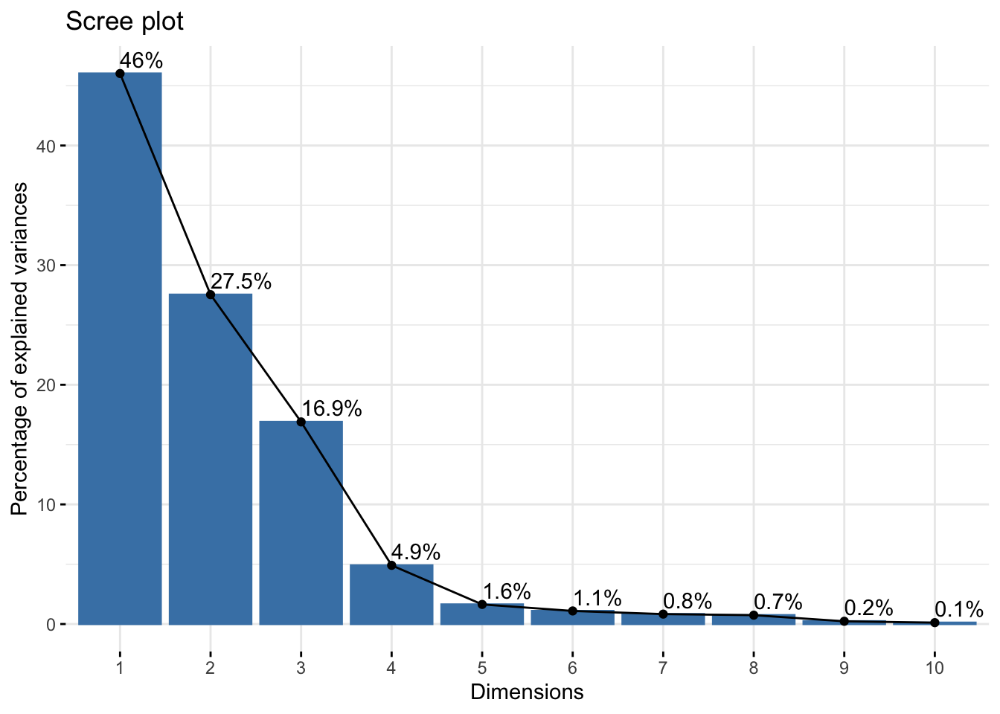
The standardized loadings were then plotted on a patter correlation matrix to define the components. The loading score for each component were extremely similar in value to ones obtained in the Fantasy Weights section. Components were defined using these definitions.
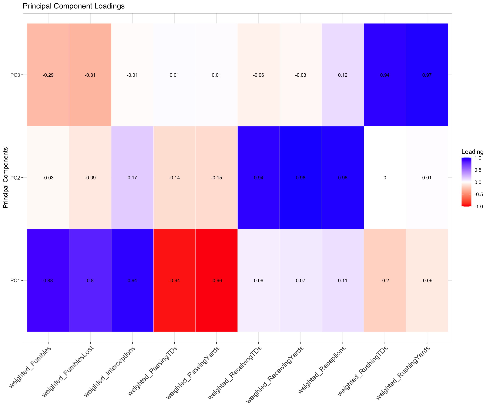
rotation: maximum variance
PC1 Definition: Low Performing QBs
Attributes: (-) Passing Yards, (-) Passing Touchdowns, (+) Fumbles, (+) Interceptions
- PC1 would be attributed to the worst overall performing quarter backs. The significantly negative loadings for passing yards and touch downs mean that quarter backs that load high to this component are unable to score touch downs. Additionally, they load extremely high for fumbles and interceptions, a confirmation of their under performance in relevant categories. PC1 would only be attributed to quarter backs since these in-game stats are generally relevant to them alone. When calculating scores for PC1, the highest-performing or best overall quarter backs would have the lowest scores, since they would negatively contribute to this component.
PC2 Definition: High-Performing Distance Efficiency
Attributes: + Receiving Touchdowns, + Receiving Yards, + Receptions
- PC2 can be attributed to total overall offensive efficiency given that we load extremely high for receiving touchdowns, receiving yards, and receptions. Players that load high to this category are likely wide receivers since wide receivers are more used for long range plays. The key distinction to make here is that this describes the overall long range efficiency only, since rushing yards and rushing touch downs are not accounted for in this component. Additionally, overall long range efficiency would better describe this component, since this must be a combination of quarter backs and the offensive line. Wide receivers, running backs, and tight ends will generally only score more touch downs and have more yards with a better quarter back.
PC3 Definition: High-Performing Driving Efficiency
Attributes: + Rushing Touchdowns, + Rushing Yards
- PC3 would be attributed to overall driving efficiency in the same fashion. Likewise, this is also a combination of the offense line and the quarterback, considering that high performing drivers will still be unable to score touch downs in some fashion if their quarter back cannot perform. I would expect running backs and tight ends to load high to this category.
The annotations show what regions in each component would isolate the best (or worst) quarter backs for PC1 and the best long-range players for PC2. The benefit of plotting components as functions of each other is to understand the variability between two dimensions individually. Comparing PC1 and PC2 in this manner may not be necessary considering how we’ve defined the components, but visualizing it this way highlights any outliers and spread of the data. The ellipses are the regions that represent the 95% confidence interval for each fantasy position. Looking at PC1 and its associated eigen vectors, it is evident that the best quarter backs would be those that have high values along the x-axis (note that quarter backs are the only group spread differently than the others, evidence that this component are attributes of them). Although the individual component scores for these quarter backs will be negative (as they negatively contribute to this component), these are orthogonal projections, so the fact that it is ‘positive’ on the x axis here is meaningless. The interpretation would be identical if we flipped it over the y axis. The three quarter backs we definitely want to obtain are the three outliers closest to the top of the annotated box. These quarter backs would be something akin to the ‘best of the best’. The other important part of this relates to PC2. The underlying variables that contribute the most to this component are receptions, receiving yards, and receiving touch downs. This is the ‘long-range’ cateogry (rushing yards and tds are not accounted for here). In the previous biplot, wide receivers completely dominated this region when it came to individual component scores of athletes. While that is somewhat the case here, notice that running backs are not far behind. Athletes highest in y values are still the wide receivers, but there is a good region of running backs [2,2.5] on the x axis that contribute just as well as wide receivers.
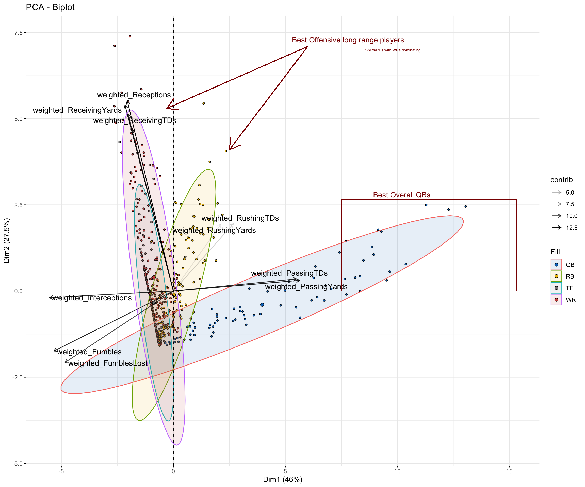
Understanding the variability between two dimensions individually would be the most beneficial between PC2 and PC3 since it would easily highlight players that are the best at both. The dynamic sport of football and the physical build of players makes it extremely difficult to be an efficient driving scorer and an efficient passing scorer (receiving). Running backs tend to do well in the driving aspect; they have stockier frames making easier to drive through defenses and gain yardages that way. Wide receivers do well on the receiving end - they have slimmer frames leading to elusive plays to gain the most yardage (hail marys’ as an polar example). Players that contribute equally well to PC2 and PC3 are wraps for fantasy (granted they have a good quarter back).
The same trend identified in the component definitions are seen here. The region with the highest x values are wide receivers (tip of 95% CI extends out the most) with a handful of outliers near the max. The region with the highest y values, representing PC3, is nearly reserved for running backs (except for a couple exceptions). Notice that there are almost no players that positively contribute to PC3. I can physically count by hand the six players that positively contribute for PC3 that are not running backs. There are two parts of this graph to pay attention to. Firstly, the red box indicates the top of the 95% confidence interval for running backs ie the best of the best for PC3. Players in this region should be selected in the fantasy draft. More importantly, there is one identified that contributes extremely well to both PC2 and PC3. The vertical line separates the top six NFL athletes for long range efficiency, who are wide receivers (using a weighted average of ’22 and ’23 seasons), but there is only one running back out of the entire NFL offense that is in this category but also one of the best in driving efficiency. Take a guess whom that is.
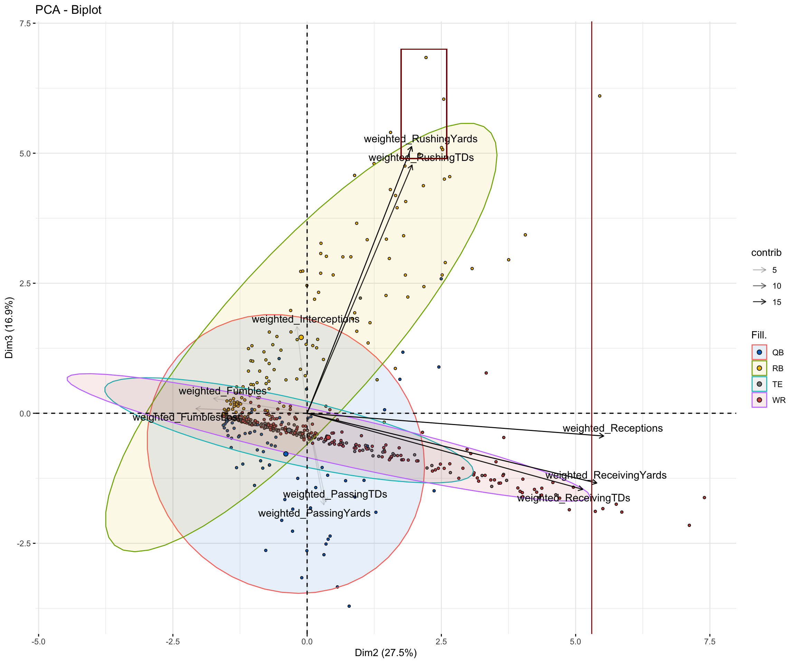
Model Picks
There are two different ways of calculating overall scores (ie principal component scores) for each player to identify the players that should be drafted for this season. The first is to only use variables that contribute within the empirical range (+/-.75). Usually, the empirical range is only used to define what the principal components are or represent. Generally all scores should be used when calculating scores, the benefit being that it captures the combined variance of all the variables and the overall score is the more accurate reflection. The one drawback with this approach is that it complicates the model. The benefit of using only variables that are outside the empirical threshold is that it simplifies the model and is easier to interpret. Note that when interpreting the visualizations in this analysis, specifically the biplots, all component scores need to be included in the calculation. I will show the picks using both methods.
Approach 1 - Empirical Threshold
QBs
| ModelRank | Rank2023 | PositionRank2023 | Team2023 | Player2023 | FantasyPointsPPR2023 | pc1 | pc2 | pc3 | ovr |
|---|---|---|---|---|---|---|---|---|---|
| 1 | 3 | 1 | BUF | Josh Allen | 392.6 | -336.8850 | 0.0000000 | 75.2816532 | 412.1666 |
| 2 | 50 | 8 | KAN | Patrick Mahomes | 280.2 | -331.6486 | 0.5168941 | 11.1670530 | 343.3325 |
| 3 | 40 | 7 | DET | Jared Goff | 289.1 | -323.6598 | 0.4842071 | 7.8787255 | 332.0227 |
| 4 | 66 | 11 | MIA | Tua Tagovailoa | 270.4 | -316.1377 | 0.0000000 | 0.7021111 | 316.8398 |
| 5 | 8 | 3 | DAL | Dak Prescott | 342.8 | -302.7733 | 0.0000000 | 11.5304138 | 314.3037 |
| 6 | 76 | 12 | JAX | Trevor Lawrence | 262.5 | -296.4182 | 0.0000000 | 27.5229754 | 323.9412 |
| 7 | 5 | 2 | PHI | Jalen Hurts | 356.8 | -277.1566 | 0.0000000 | 87.0594829 | 364.2161 |
| 8 | 58 | 9 | HOU | C.J. Stroud | 276.0 | -275.1716 | 0.9623171 | 18.5073453 | 294.6413 |
| 9 | 80 | 16 | NOR | Derek Carr | 241.1 | -270.6667 | 0.0000000 | 0.5861661 | 271.2528 |
| 10 | 83 | 19 | SEA | Geno Smith | 227.3 | -270.3990 | 0.5107969 | 7.8084478 | 278.7183 |
| 11 | 60 | 10 | TAM | Baker Mayfield | 274.1 | -251.3108 | 0.0000000 | 6.9678469 | 258.2787 |
| 12 | 81 | 17 | LAC | Justin Herbert | 234.2 | -250.4118 | 1.6099590 | 13.2045966 | 265.2264 |
| 13 | 78 | 13 | DEN | Russell Wilson | 256.9 | -248.3591 | 0.3534593 | 19.9824227 | 268.6950 |
| 14 | 31 | 6 | SFO | Brock Purdy | 295.6 | -247.5300 | 0.0000000 | 10.3548609 | 257.8848 |
| 15 | 10 | 4 | BAL | Lamar Jackson | 331.2 | -241.6355 | 0.0000000 | 32.1511112 | 273.7866 |
| 16 | 89 | 24 | MIN | Kirk Cousins | 149.7 | -233.3930 | 0.0000000 | 4.2276148 | 237.6206 |
| 17 | 79 | 15 | LAR | Matthew Stafford | 243.1 | -225.1303 | 0.0000000 | 2.3247628 | 227.4550 |
| 18 | 90 | 25 | CIN | Joe Burrow | 147.2 | -222.2560 | 0.0000000 | 10.7799923 | 233.0360 |
| 19 | 18 | 5 | GNB | Jordan Love | 319.1 | -218.7511 | 0.0000000 | 16.6044933 | 235.3556 |
| 20 | 82 | 18 | CHI | Justin Fields | 230.2 | -200.9537 | 0.0000000 | 37.9466259 | 238.9003 |
WRs
| ModelRank | Rank2023 | PositionRank2023 | Team2023 | Player2023 | FantasyPointsPPR2023 | pc1 | pc2 | pc3 | ovr |
|---|---|---|---|---|---|---|---|---|---|
| 1 | 4 | 2 | MIA | Tyreek Hill | 376.4 | -2.8242470 | 352.7382 | 2.0767694 | 357.6392 |
| 2 | 2 | 1 | DAL | CeeDee Lamb | 403.2 | -5.6484940 | 344.4119 | 8.3875950 | 358.4480 |
| 3 | 7 | 3 | DET | Amon-Ra St. Brown | 330.9 | -2.2389478 | 298.3283 | 0.4605591 | 301.0279 |
| 4 | 20 | 8 | PHI | A.J. Brown | 289.6 | -6.7168433 | 289.3462 | 0.0000000 | 296.0631 |
| 5 | 14 | 5 | LAR | Puka Nacua | 298.5 | -1.7558977 | 282.0636 | 0.8599250 | 284.6794 |
| 6 | 34 | 14 | LVR | Davante Adams | 265.4 | -0.5852992 | 281.3340 | -0.0032207 | 281.9161 |
| 7 | 29 | 12 | BUF | Stefon Diggs | 273.8 | -3.9948454 | 280.2885 | 0.0225449 | 284.3059 |
| 8 | 9 | 4 | TAM | Mike Evans | 282.5 | 0.0000000 | 256.9248 | 0.0000000 | 256.9248 |
| 9 | 33 | 13 | CIN | Ja’Marr Chase | 262.7 | -3.2292872 | 250.8549 | -0.0128828 | 254.0713 |
| 10 | 70 | 26 | MIN | Justin Jefferson | 202.2 | -2.6767197 | 249.3281 | 1.8770865 | 253.8819 |
| 11 | 15 | 6 | CHI | D.J. Moore | 286.5 | -2.2389478 | 245.1010 | 4.0601387 | 251.4000 |
| 12 | 25 | 10 | SFO | Brandon Aiyuk | 249.2 | -3.3584216 | 237.1919 | 0.0740759 | 240.6244 |
| 13 | 54 | 22 | PHI | DeVonta Smith | 227.6 | -3.3584216 | 232.4062 | 0.0000000 | 235.7646 |
| 14 | 27 | 11 | LAC | Keenan Allen | 278.9 | -8.3019302 | 231.6001 | 0.0644139 | 239.9664 |
| 15 | 62 | 25 | IND | Michael Pittman Jr. | 250.2 | -5.1143193 | 230.7656 | 0.0966208 | 235.9765 |
| 16 | 42 | 16 | CLE | Amari Cooper | 227.0 | -4.0363499 | 228.1088 | 0.0000000 | 232.1452 |
| 17 | 39 | 15 | SEA | D.K. Metcalf | 225.4 | -2.2389478 | 221.4407 | 0.0000000 | 223.6796 |
| 18 | 47 | 19 | MIN | Jordan Addison | 221.3 | 0.0000000 | 215.5321 | 0.0193242 | 215.5515 |
| 19 | 57 | 24 | NOR | Chris Olave | 231.3 | -2.2389478 | 213.8417 | 0.0000000 | 216.0807 |
| 20 | 103 | 32 | MIA | Jaylen Waddle | 198.6 | -1.1194739 | 212.2413 | 0.1610346 | 213.5218 |
RBs
Christian McCaffrey is favored as the first pick outside of drafting quarter backs. Although he is #3 pick for running backs, ideal picks for offensive players (although rare) would load high to principal components two and three. His combined component score for those dimensions are the highest of any offensive player included in the data.
| ModelRank | Rank2023 | PositionRank2023 | Team2023 | Player2023 | FantasyPointsPPR2023 | pc1 | pc2 | pc3 | ovr |
|---|---|---|---|---|---|---|---|---|---|
| 1 | 6 | 2 | MIA | Raheem Mostert | 267.7 | -6.8702170 | 59.71549 | 82.59469 | 149.18040 |
| 2 | 16 | 5 | TEN | Derrick Henry | 246.7 | -11.8040821 | 55.54816 | 81.92272 | 149.27497 |
| 3 | 1 | 1 | SFO | Christian McCaffrey | 391.3 | -7.9271136 | 168.60418 | 80.64146 | 257.17276 |
| 4 | 32 | 9 | DET | David Montgomery | 207.2 | -5.6484940 | 41.11002 | 67.30746 | 114.06597 |
| 5 | 35 | 10 | DET | Jahmyr Gibbs | 242.1 | -5.1143193 | 86.91137 | 65.44326 | 157.46895 |
| 6 | 53 | 14 | BAL | Gus Edwards | 187.0 | -6.7679679 | 19.46584 | 61.04759 | 87.28140 |
| 7 | 12 | 3 | JAX | Travis Etienne | 282.4 | -4.5290201 | 93.80611 | 60.79753 | 159.13267 |
| 8 | 17 | 6 | CIN | Joe Mixon | 267.0 | 0.0000000 | 107.29194 | 56.20920 | 163.50113 |
| 9 | 59 | 16 | SEA | Kenneth Walker III | 199.4 | -1.1705985 | 53.51327 | 56.13834 | 110.82221 |
| 10 | 93 | 25 | LVR | Josh Jacobs | 181.1 | -6.8702170 | 73.16355 | 55.55920 | 135.59296 |
| 11 | 65 | 20 | PIT | Najee Harris | 195.5 | -6.2852958 | 56.23899 | 53.17002 | 115.69431 |
| 12 | 13 | 4 | LAR | Kyren Williams | 255.0 | -5.6484940 | 51.13492 | 52.86670 | 109.65011 |
| 13 | 69 | 21 | MIA | De’Von Achane | 190.7 | -3.3584216 | 62.95150 | 52.77974 | 119.08966 |
| 14 | 43 | 13 | NYG | Saquon Barkley | 223.2 | -5.0631947 | 89.62998 | 51.71806 | 146.41124 |
| 15 | 99 | 31 | LAC | Austin Ekeler | 185.4 | -14.6554096 | 132.87294 | 50.16511 | 197.69347 |
| 16 | 63 | 18 | DAL | Tony Pollard | 222.6 | -4.5801447 | 86.13688 | 49.13565 | 139.85267 |
| 17 | 52 | 15 | ARI | James Conner | 201.5 | -2.2900723 | 62.47610 | 48.63644 | 113.40261 |
| 18 | 61 | 17 | KAN | Isiah Pacheco | 213.9 | -5.6484940 | 60.44341 | 44.36051 | 110.45242 |
| 19 | 122 | 37 | CLE | Kareem Hunt | 118.5 | -0.5852992 | 35.16709 | 43.57351 | 79.32590 |
| 20 | 97 | 28 | IND | Jonathan Taylor | 156.4 | -4.5290201 | 39.76985 | 41.33364 | 85.63251 |
Top 75
Based on the functional nature of football and analysis thus far, a top 75 list wouldn’t be meaningful, since each component and position is unique to its own. For those that are curious, however, a ranking such as this can, in theory, be created by combining all component scores.
| ModelRank | Rank2023 | PositionRank2023 | Team2023 | FantasyPosition2023 | Player2023 | FantasyPointsPPR2023 | pc1 | pc2 | pc3 | ovr |
|---|---|---|---|---|---|---|---|---|---|---|
| 1 | 3 | 1 | BUF | QB | Josh Allen | 392.6 | -336.8849856 | 0.0000000 | 75.2816532 | 412.1666 |
| 2 | 5 | 2 | PHI | QB | Jalen Hurts | 356.8 | -277.1566447 | 0.0000000 | 87.0594829 | 364.2161 |
| 3 | 2 | 1 | DAL | WR | CeeDee Lamb | 403.2 | -5.6484940 | 344.4118627 | 8.3875950 | 358.4480 |
| 4 | 4 | 2 | MIA | WR | Tyreek Hill | 376.4 | -2.8242470 | 352.7382300 | 2.0767694 | 357.6392 |
| 5 | 50 | 8 | KAN | QB | Patrick Mahomes | 280.2 | -331.6485727 | 0.5168941 | 11.1670530 | 343.3325 |
| 6 | 40 | 7 | DET | QB | Jared Goff | 289.1 | -323.6597758 | 0.4842071 | 7.8787255 | 332.0227 |
| 7 | 76 | 12 | JAX | QB | Trevor Lawrence | 262.5 | -296.4181804 | 0.0000000 | 27.5229754 | 323.9412 |
| 8 | 66 | 11 | MIA | QB | Tua Tagovailoa | 270.4 | -316.1377077 | 0.0000000 | 0.7021111 | 316.8398 |
| 9 | 8 | 3 | DAL | QB | Dak Prescott | 342.8 | -302.7732618 | 0.0000000 | 11.5304138 | 314.3037 |
| 10 | 7 | 3 | DET | WR | Amon-Ra St. Brown | 330.9 | -2.2389478 | 298.3283464 | 0.4605591 | 301.0279 |
| 11 | 20 | 8 | PHI | WR | A.J. Brown | 289.6 | -6.7168433 | 289.3462135 | 0.0000000 | 296.0631 |
| 12 | 58 | 9 | HOU | QB | C.J. Stroud | 276.0 | -275.1716287 | 0.9623171 | 18.5073453 | 294.6413 |
| 13 | 14 | 5 | LAR | WR | Puka Nacua | 298.5 | -1.7558977 | 282.0636273 | 0.8599250 | 284.6794 |
| 14 | 29 | 12 | BUF | WR | Stefon Diggs | 273.8 | -3.9948454 | 280.2885390 | 0.0225449 | 284.3059 |
| 15 | 34 | 14 | LVR | WR | Davante Adams | 265.4 | -0.5852992 | 281.3340147 | -0.0032207 | 281.9161 |
| 16 | 83 | 19 | SEA | QB | Geno Smith | 227.3 | -270.3990214 | 0.5107969 | 7.8084478 | 278.7183 |
| 17 | 10 | 4 | BAL | QB | Lamar Jackson | 331.2 | -241.6354945 | 0.0000000 | 32.1511112 | 273.7866 |
| 18 | 80 | 16 | NOR | QB | Derek Carr | 241.1 | -270.6666575 | 0.0000000 | 0.5861661 | 271.2528 |
| 19 | 78 | 13 | DEN | QB | Russell Wilson | 256.9 | -248.3591059 | 0.3534593 | 19.9824227 | 268.6950 |
| 20 | 81 | 17 | LAC | QB | Justin Herbert | 234.2 | -250.4118266 | 1.6099590 | 13.2045966 | 265.2264 |
| 21 | 60 | 10 | TAM | QB | Baker Mayfield | 274.1 | -251.3108188 | 0.0000000 | 6.9678469 | 258.2787 |
| 22 | 31 | 6 | SFO | QB | Brock Purdy | 295.6 | -247.5299791 | 0.0000000 | 10.3548609 | 257.8848 |
| 23 | 1 | 1 | SFO | RB | Christian McCaffrey | 391.3 | -7.9271136 | 168.6041824 | 80.6414638 | 257.1728 |
| 24 | 9 | 4 | TAM | WR | Mike Evans | 282.5 | 0.0000000 | 256.9248291 | 0.0000000 | 256.9248 |
| 25 | 33 | 13 | CIN | WR | Ja’Marr Chase | 262.7 | -3.2292872 | 250.8548747 | -0.0128828 | 254.0713 |
| 26 | 70 | 26 | MIN | WR | Justin Jefferson | 202.2 | -2.6767197 | 249.3280744 | 1.8770865 | 253.8819 |
| 27 | 15 | 6 | CHI | WR | D.J. Moore | 286.5 | -2.2389478 | 245.1009581 | 4.0601387 | 251.4000 |
| 28 | 26 | 3 | KAN | TE | Travis Kelce | 219.4 | -3.3584216 | 246.1584535 | 0.0161035 | 249.5330 |
| 29 | 25 | 10 | SFO | WR | Brandon Aiyuk | 249.2 | -3.3584216 | 237.1919041 | 0.0740759 | 240.6244 |
| 30 | 27 | 11 | LAC | WR | Keenan Allen | 278.9 | -8.3019302 | 231.6000597 | 0.0644139 | 239.9664 |
| 31 | 82 | 18 | CHI | QB | Justin Fields | 230.2 | -200.9537028 | 0.0000000 | 37.9466259 | 238.9003 |
| 32 | 89 | 24 | MIN | QB | Kirk Cousins | 149.7 | -233.3929601 | 0.0000000 | 4.2276148 | 237.6206 |
| 33 | 62 | 25 | IND | WR | Michael Pittman Jr. | 250.2 | -5.1143193 | 230.7656078 | 0.0966208 | 235.9765 |
| 34 | 54 | 22 | PHI | WR | DeVonta Smith | 227.6 | -3.3584216 | 232.4062271 | 0.0000000 | 235.7646 |
| 35 | 18 | 5 | GNB | QB | Jordan Love | 319.1 | -218.7511326 | 0.0000000 | 16.6044933 | 235.3556 |
| 36 | 90 | 25 | CIN | QB | Joe Burrow | 147.2 | -222.2560458 | 0.0000000 | 10.7799923 | 233.0360 |
| 37 | 42 | 16 | CLE | WR | Amari Cooper | 227.0 | -4.0363499 | 228.1088277 | 0.0000000 | 232.1452 |
| 38 | 11 | 1 | DET | TE | Sam LaPorta | 239.3 | 0.0000000 | 228.7718784 | 0.0386483 | 228.8105 |
| 39 | 79 | 15 | LAR | QB | Matthew Stafford | 243.1 | -225.1302799 | 0.0000000 | 2.3247628 | 227.4550 |
| 40 | 39 | 15 | SEA | WR | D.K. Metcalf | 225.4 | -2.2389478 | 221.4406898 | 0.0000000 | 223.6796 |
| 41 | 112 | 36 | NYJ | WR | Garrett Wilson | 213.2 | -6.1826686 | 211.3563377 | 0.0128828 | 217.5519 |
| 42 | 57 | 24 | NOR | WR | Chris Olave | 231.3 | -2.2389478 | 213.8417338 | 0.0000000 | 216.0807 |
| 43 | 28 | 4 | MIN | TE | T.J. Hockenson | 219.0 | -3.3584216 | 212.5474634 | 0.0000000 | 215.9059 |
| 44 | 47 | 19 | MIN | WR | Jordan Addison | 221.3 | 0.0000000 | 215.5321435 | 0.0193242 | 215.5515 |
| 45 | 77 | 14 | WAS | QB | Sam Howell | 257.5 | -191.5508111 | 0.9030403 | 22.4547598 | 214.9086 |
| 46 | 72 | 27 | KAN | WR | Rashee Rice | 212.5 | -5.1143193 | 209.1896872 | -0.0289862 | 214.2750 |
| 47 | 36 | 6 | JAX | TE | Evan Engram | 230.3 | -5.6484940 | 208.0803575 | 0.0418690 | 213.7707 |
| 48 | 103 | 32 | MIA | WR | Jaylen Waddle | 198.6 | -1.1194739 | 212.2412612 | 0.1610346 | 213.5218 |
| 49 | 107 | 34 | SEA | WR | Tyler Lockett | 202.4 | -2.2389478 | 207.0999236 | 0.0000000 | 209.3389 |
| 50 | 102 | 31 | CAR | WR | Adam Thielen | 231.0 | -2.3411969 | 205.6832038 | 0.0515311 | 208.0759 |
| 51 | 104 | 33 | TAM | WR | Chris Godwin | 209.2 | -2.2389478 | 200.7186832 | 4.0150490 | 206.9727 |
| 52 | 75 | 29 | WAS | WR | Terry McLaurin | 209.2 | -0.5852992 | 205.3121344 | 0.0934001 | 205.9908 |
| 53 | 88 | 23 | CAR | QB | Bryce Young | 156.4 | -200.2969227 | 0.0000000 | 2.4445059 | 202.7414 |
| 54 | 45 | 18 | GNB | WR | Jayden Reed | 217.2 | -3.5117954 | 186.4197583 | 12.4123061 | 202.3439 |
| 55 | 51 | 21 | LVR | WR | Jakobi Meyers | 218.6 | -5.0590601 | 189.2252456 | 7.6275115 | 201.9118 |
| 56 | 23 | 9 | HOU | WR | Nico Collins | 260.4 | -1.1705985 | 199.0064355 | 0.0450897 | 200.2221 |
| 57 | 22 | 2 | SFO | TE | George Kittle | 203.2 | -1.1194739 | 197.7416374 | 0.0128828 | 198.8740 |
| 58 | 99 | 31 | LAC | RB | Austin Ekeler | 185.4 | -14.6554096 | 132.8729430 | 50.1651129 | 197.6935 |
| 59 | 21 | 7 | SFO | WR | Deebo Samuel | 243.7 | -3.9948454 | 166.8070814 | 26.5986366 | 197.4006 |
| 60 | 49 | 20 | TEN | WR | DeAndre Hopkins | 223.6 | -1.7047731 | 194.5227328 | 0.0579725 | 196.2855 |
| 61 | 101 | 30 | BAL | WR | Zay Flowers | 206.4 | 0.0000000 | 187.6528827 | 6.1723358 | 193.8252 |
| 62 | 55 | 23 | PIT | WR | George Pickens | 208.8 | -3.5117954 | 185.2630141 | 2.0703280 | 190.8451 |
| 63 | 74 | 28 | DEN | WR | Courtland Sutton | 190.2 | -6.7168433 | 179.0934789 | 0.0161035 | 185.8264 |
| 64 | 30 | 5 | CLE | TE | David Njoku | 201.2 | -5.5973694 | 180.1365787 | -0.0257655 | 185.7082 |
| 65 | 134 | 47 | JAX | WR | Christian Kirk | 150.3 | -5.5716181 | 178.6363682 | 0.0740759 | 184.2821 |
| 66 | 85 | 21 | IND | QB | Gardner Minshew II | 196.2 | -165.8224506 | 0.0000000 | 13.7934059 | 179.6159 |
| 67 | 86 | 22 | ATL | QB | Desmond Ridder | 177.1 | -154.1840391 | 0.2493013 | 20.2201764 | 174.6535 |
| 68 | 121 | 42 | ATL | WR | Drake London | 174.4 | -3.9249500 | 170.5222128 | 0.0000000 | 174.4472 |
| 69 | 120 | 41 | LAR | WR | Cooper Kupp | 164.4 | -1.7047731 | 168.0109081 | 2.0252383 | 171.7409 |
| 70 | 38 | 12 | ATL | RB | Bijan Robinson | 246.3 | -11.8311626 | 127.1046309 | 31.9552264 | 170.8910 |
| 71 | 84 | 20 | 2TM | QB | Joshua Dobbs | 200.7 | -144.9644778 | 0.0000000 | 25.3785715 | 170.3430 |
| 72 | 118 | 31 | NWE | QB | Mac Jones | 106.4 | -166.9169863 | 0.0000000 | 2.8239702 | 169.7410 |
| 73 | 46 | 8 | CHI | TE | Cole Kmet | 181.1 | -1.7558977 | 164.9200433 | 0.0418690 | 166.7178 |
| 74 | 113 | 38 | BUF | WR | Gabriel Davis | 161.4 | -3.3584216 | 161.5473649 | -0.0128828 | 164.8929 |
| 75 | 91 | 26 | ARI | QB | Kyler Murray | 146.4 | -144.1053422 | 0.0000000 | 19.8117259 | 163.9171 |